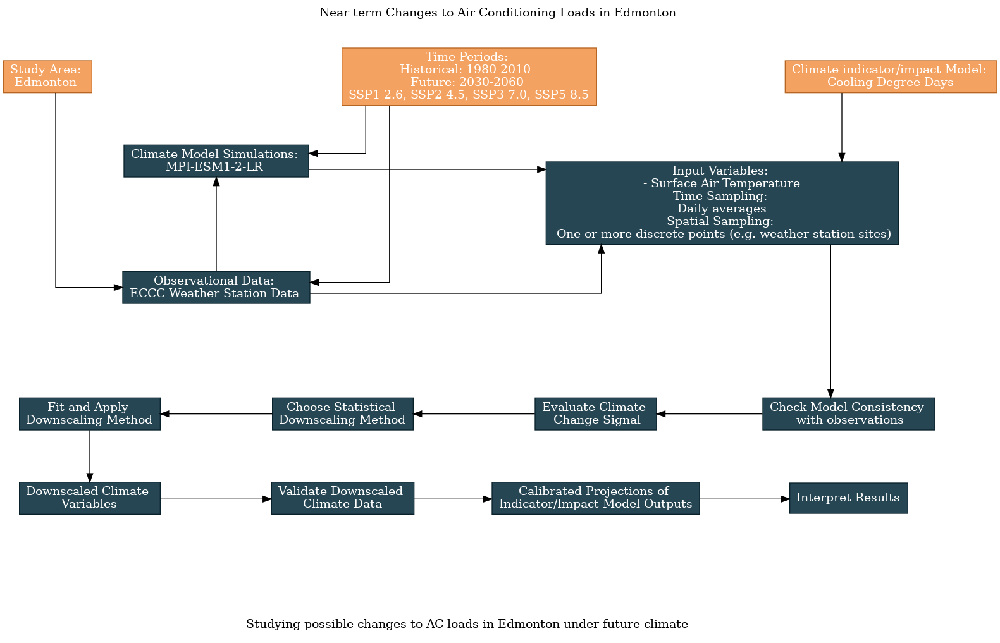

6.4 Edmonton AC Loads: Near-Term Projections#
The previous worked examples on this topic used an end-of-century period as the time horizon for the future projections. This was useful for getting a strong signal to demonstrate the downscaling and validation methods, but it may not be what most practitioners are interested in. Here we’ll reproduce the analysis in 6.3, but for a future time period of 2030-2060. To slightly reduce the dimensionality, we’ll return to using only one model. Since its downscaled projections fall near the middle of the multi-model range, and it has multiple ensemble members available for all scenarios, we’ll choose MPI-ESM1-2-LR as our model.
Here is an updated flowchart, generated using the UTCDW survey:
{kind=link}
6.4.1 Acquiring the Data#
As always, we’ll begin by importing the necessary packages and acquiring the data.
Show code cell content
import xarray as xr
from xclim import sdba
from xclim.core.calendar import convert_calendar
import xclim.indices as xci
import xclim.ensembles as xce
import numpy as np
import pandas as pd
import scipy.stats as stats
import seaborn as sns
import matplotlib.pyplot as plt
import ec3
import gcsfs
import zarr
import os
# lat and lon coordinates for Edmonton
lat_edm = 53.5
lon_edm = -113.5
# time periods for historical and future periods
years_hist = range(1980, 2011) # remember that range(start, end) is not inclusive of `end`
years_future = range(2030, 2061)
# url for the CSV file that contains the data catalog
url_gcsfs_catalog = 'https://storage.googleapis.com/cmip6/cmip6-zarr-consolidated-stores.csv'
/Users/mikemorris/opt/anaconda3/envs/UTCDW/lib/python3.9/site-packages/xclim/indices/fire/_cffwis.py:218: NumbaDeprecationWarning: The 'nopython' keyword argument was not supplied to the 'numba.jit' decorator. The implicit default value for this argument is currently False, but it will be changed to True in Numba 0.59.0. See https://numba.readthedocs.io/en/stable/reference/deprecation.html#deprecation-of-object-mode-fall-back-behaviour-when-using-jit for details.
def _day_length(lat: int | float, mth: int): # pragma: no cover
/Users/mikemorris/opt/anaconda3/envs/UTCDW/lib/python3.9/site-packages/xclim/indices/fire/_cffwis.py:238: NumbaDeprecationWarning: The 'nopython' keyword argument was not supplied to the 'numba.jit' decorator. The implicit default value for this argument is currently False, but it will be changed to True in Numba 0.59.0. See https://numba.readthedocs.io/en/stable/reference/deprecation.html#deprecation-of-object-mode-fall-back-behaviour-when-using-jit for details.
def _day_length_factor(lat: float, mth: int): # pragma: no cover
Show code cell content
# get the same station data as from 6.1 and 6.2
def download_station_data(stn_id, years = range(1992, 2022)):
"""
Download ECCC observational data at the weather station identified with stn_id,
re-name the columns to more useful names. Optional: select specific years of data,
but by default, download all data from 1990--2020.
"""
# download the data
df = ec3.get_data(stn_id, years = years, progress = False)
# dictionary mapping original column names to new ones
column_name_dict = {'Date/Time': 'time',
'Mean Temp (°C)': 'tas',
'Latitude (y)': 'lat',
'Longitude (x)': 'lon',
'Station Name': 'Name'}
df = df.rename(columns = column_name_dict)
# select only the variables we re-named - you can comment this out if you want to keep all variables
df = df[list(column_name_dict.values())]
# set the "time" column as an index column and convert it from strings to Datetime objects to make
# selecting times easier
df['time'] = pd.to_datetime(df['time'])
df = df.set_index("time")
# sort the data in proper chronological order
df = df.sort_index()
df = df.dropna()
return df
Show code cell content
# download the station data
stn_id_list = [1867, 31427]
df_list = []
for stn_id in stn_id_list:
df = download_station_data(stn_id, years = years_hist)
df_list.append(df)
stn_df = pd.concat(df_list, axis = 0)
# now convert it to xarray format for easier use with the model data and xclim
# drop lat and lon variables, since we want these to be coordinates in the xr.Dataset
stn_lon = stn_df.lon.values[0] + 360 # convert lon to same convention as model data
stn_lat = stn_df.lat.values[0]
stn_df = stn_df.drop(['lat', 'lon'], axis = 1)
stn_ds = xr.Dataset.from_dataframe(stn_df)
stn_ds = stn_ds.assign_coords(lat = stn_lat, lon = stn_lon)
stn_ds_noleap = convert_calendar(stn_ds, 'noleap')
tas_obs_noleap = stn_ds_noleap.tas
# open the Google Cloud model data catalog with pandas
df_catalog = pd.read_csv(url_gcsfs_catalog)
# search for entries which have daily tas data from the selected scenarios and models
scenarios = ['historical', 'ssp126', 'ssp245', 'ssp370', 'ssp585']
model = "MPI-ESM1-2-LR"
search_string = "table_id == 'day' & variable_id == 'tas'"
search_string += f" & experiment_id == {scenarios}"
search_string += f"& source_id == '{model}'"
df_search = df_catalog.query(search_string)
df_search = df_search.sort_values(['experiment_id', 'member_id'])
df_search
Show code cell output
| activity_id | institution_id | source_id | experiment_id | member_id | table_id | variable_id | grid_label | zstore | dcpp_init_year | version | |
|---|---|---|---|---|---|---|---|---|---|---|---|
| 222401 | CMIP | MPI-M | MPI-ESM1-2-LR | historical | r10i1p1f1 | day | tas | gn | gs://cmip6/CMIP6/CMIP/MPI-M/MPI-ESM1-2-LR/hist... | NaN | 20190710 |
| 222060 | CMIP | MPI-M | MPI-ESM1-2-LR | historical | r1i1p1f1 | day | tas | gn | gs://cmip6/CMIP6/CMIP/MPI-M/MPI-ESM1-2-LR/hist... | NaN | 20190710 |
| 234602 | CMIP | MPI-M | MPI-ESM1-2-LR | historical | r2i1p1f1 | day | tas | gn | gs://cmip6/CMIP6/CMIP/MPI-M/MPI-ESM1-2-LR/hist... | NaN | 20190710 |
| 234208 | CMIP | MPI-M | MPI-ESM1-2-LR | historical | r3i1p1f1 | day | tas | gn | gs://cmip6/CMIP6/CMIP/MPI-M/MPI-ESM1-2-LR/hist... | NaN | 20190710 |
| 232957 | CMIP | MPI-M | MPI-ESM1-2-LR | historical | r4i1p1f1 | day | tas | gn | gs://cmip6/CMIP6/CMIP/MPI-M/MPI-ESM1-2-LR/hist... | NaN | 20190710 |
| 235284 | CMIP | MPI-M | MPI-ESM1-2-LR | historical | r5i1p1f1 | day | tas | gn | gs://cmip6/CMIP6/CMIP/MPI-M/MPI-ESM1-2-LR/hist... | NaN | 20190710 |
| 235429 | CMIP | MPI-M | MPI-ESM1-2-LR | historical | r6i1p1f1 | day | tas | gn | gs://cmip6/CMIP6/CMIP/MPI-M/MPI-ESM1-2-LR/hist... | NaN | 20190710 |
| 236448 | CMIP | MPI-M | MPI-ESM1-2-LR | historical | r7i1p1f1 | day | tas | gn | gs://cmip6/CMIP6/CMIP/MPI-M/MPI-ESM1-2-LR/hist... | NaN | 20190710 |
| 232418 | CMIP | MPI-M | MPI-ESM1-2-LR | historical | r8i1p1f1 | day | tas | gn | gs://cmip6/CMIP6/CMIP/MPI-M/MPI-ESM1-2-LR/hist... | NaN | 20190710 |
| 236208 | CMIP | MPI-M | MPI-ESM1-2-LR | historical | r9i1p1f1 | day | tas | gn | gs://cmip6/CMIP6/CMIP/MPI-M/MPI-ESM1-2-LR/hist... | NaN | 20190710 |
| 233938 | ScenarioMIP | MPI-M | MPI-ESM1-2-LR | ssp126 | r10i1p1f1 | day | tas | gn | gs://cmip6/CMIP6/ScenarioMIP/MPI-M/MPI-ESM1-2-... | NaN | 20190710 |
| 232192 | ScenarioMIP | MPI-M | MPI-ESM1-2-LR | ssp126 | r1i1p1f1 | day | tas | gn | gs://cmip6/CMIP6/ScenarioMIP/MPI-M/MPI-ESM1-2-... | NaN | 20190710 |
| 232073 | ScenarioMIP | MPI-M | MPI-ESM1-2-LR | ssp126 | r2i1p1f1 | day | tas | gn | gs://cmip6/CMIP6/ScenarioMIP/MPI-M/MPI-ESM1-2-... | NaN | 20190710 |
| 232459 | ScenarioMIP | MPI-M | MPI-ESM1-2-LR | ssp126 | r3i1p1f1 | day | tas | gn | gs://cmip6/CMIP6/ScenarioMIP/MPI-M/MPI-ESM1-2-... | NaN | 20190710 |
| 231612 | ScenarioMIP | MPI-M | MPI-ESM1-2-LR | ssp126 | r4i1p1f1 | day | tas | gn | gs://cmip6/CMIP6/ScenarioMIP/MPI-M/MPI-ESM1-2-... | NaN | 20190710 |
| 231656 | ScenarioMIP | MPI-M | MPI-ESM1-2-LR | ssp126 | r5i1p1f1 | day | tas | gn | gs://cmip6/CMIP6/ScenarioMIP/MPI-M/MPI-ESM1-2-... | NaN | 20190710 |
| 231767 | ScenarioMIP | MPI-M | MPI-ESM1-2-LR | ssp126 | r6i1p1f1 | day | tas | gn | gs://cmip6/CMIP6/ScenarioMIP/MPI-M/MPI-ESM1-2-... | NaN | 20190710 |
| 231670 | ScenarioMIP | MPI-M | MPI-ESM1-2-LR | ssp126 | r7i1p1f1 | day | tas | gn | gs://cmip6/CMIP6/ScenarioMIP/MPI-M/MPI-ESM1-2-... | NaN | 20190710 |
| 229621 | ScenarioMIP | MPI-M | MPI-ESM1-2-LR | ssp126 | r8i1p1f1 | day | tas | gn | gs://cmip6/CMIP6/ScenarioMIP/MPI-M/MPI-ESM1-2-... | NaN | 20190710 |
| 218975 | ScenarioMIP | MPI-M | MPI-ESM1-2-LR | ssp126 | r9i1p1f1 | day | tas | gn | gs://cmip6/CMIP6/ScenarioMIP/MPI-M/MPI-ESM1-2-... | NaN | 20190710 |
| 218400 | ScenarioMIP | MPI-M | MPI-ESM1-2-LR | ssp245 | r10i1p1f1 | day | tas | gn | gs://cmip6/CMIP6/ScenarioMIP/MPI-M/MPI-ESM1-2-... | NaN | 20190710 |
| 219097 | ScenarioMIP | MPI-M | MPI-ESM1-2-LR | ssp245 | r1i1p1f1 | day | tas | gn | gs://cmip6/CMIP6/ScenarioMIP/MPI-M/MPI-ESM1-2-... | NaN | 20190710 |
| 219907 | ScenarioMIP | MPI-M | MPI-ESM1-2-LR | ssp245 | r2i1p1f1 | day | tas | gn | gs://cmip6/CMIP6/ScenarioMIP/MPI-M/MPI-ESM1-2-... | NaN | 20190710 |
| 219155 | ScenarioMIP | MPI-M | MPI-ESM1-2-LR | ssp245 | r3i1p1f1 | day | tas | gn | gs://cmip6/CMIP6/ScenarioMIP/MPI-M/MPI-ESM1-2-... | NaN | 20190710 |
| 219759 | ScenarioMIP | MPI-M | MPI-ESM1-2-LR | ssp245 | r4i1p1f1 | day | tas | gn | gs://cmip6/CMIP6/ScenarioMIP/MPI-M/MPI-ESM1-2-... | NaN | 20190710 |
| 220693 | ScenarioMIP | MPI-M | MPI-ESM1-2-LR | ssp245 | r5i1p1f1 | day | tas | gn | gs://cmip6/CMIP6/ScenarioMIP/MPI-M/MPI-ESM1-2-... | NaN | 20190710 |
| 220444 | ScenarioMIP | MPI-M | MPI-ESM1-2-LR | ssp245 | r6i1p1f1 | day | tas | gn | gs://cmip6/CMIP6/ScenarioMIP/MPI-M/MPI-ESM1-2-... | NaN | 20190710 |
| 220649 | ScenarioMIP | MPI-M | MPI-ESM1-2-LR | ssp245 | r7i1p1f1 | day | tas | gn | gs://cmip6/CMIP6/ScenarioMIP/MPI-M/MPI-ESM1-2-... | NaN | 20190710 |
| 221438 | ScenarioMIP | MPI-M | MPI-ESM1-2-LR | ssp245 | r8i1p1f1 | day | tas | gn | gs://cmip6/CMIP6/ScenarioMIP/MPI-M/MPI-ESM1-2-... | NaN | 20190710 |
| 220209 | ScenarioMIP | MPI-M | MPI-ESM1-2-LR | ssp245 | r9i1p1f1 | day | tas | gn | gs://cmip6/CMIP6/ScenarioMIP/MPI-M/MPI-ESM1-2-... | NaN | 20190710 |
| 225785 | ScenarioMIP | MPI-M | MPI-ESM1-2-LR | ssp370 | r10i1p1f1 | day | tas | gn | gs://cmip6/CMIP6/ScenarioMIP/MPI-M/MPI-ESM1-2-... | NaN | 20190710 |
| 230279 | ScenarioMIP | MPI-M | MPI-ESM1-2-LR | ssp370 | r1i1p1f1 | day | tas | gn | gs://cmip6/CMIP6/ScenarioMIP/MPI-M/MPI-ESM1-2-... | NaN | 20190710 |
| 225236 | ScenarioMIP | MPI-M | MPI-ESM1-2-LR | ssp370 | r2i1p1f1 | day | tas | gn | gs://cmip6/CMIP6/ScenarioMIP/MPI-M/MPI-ESM1-2-... | NaN | 20190710 |
| 225715 | ScenarioMIP | MPI-M | MPI-ESM1-2-LR | ssp370 | r3i1p1f1 | day | tas | gn | gs://cmip6/CMIP6/ScenarioMIP/MPI-M/MPI-ESM1-2-... | NaN | 20190710 |
| 224968 | ScenarioMIP | MPI-M | MPI-ESM1-2-LR | ssp370 | r4i1p1f1 | day | tas | gn | gs://cmip6/CMIP6/ScenarioMIP/MPI-M/MPI-ESM1-2-... | NaN | 20190710 |
| 226235 | ScenarioMIP | MPI-M | MPI-ESM1-2-LR | ssp370 | r5i1p1f1 | day | tas | gn | gs://cmip6/CMIP6/ScenarioMIP/MPI-M/MPI-ESM1-2-... | NaN | 20190710 |
| 225319 | ScenarioMIP | MPI-M | MPI-ESM1-2-LR | ssp370 | r6i1p1f1 | day | tas | gn | gs://cmip6/CMIP6/ScenarioMIP/MPI-M/MPI-ESM1-2-... | NaN | 20190710 |
| 227603 | ScenarioMIP | MPI-M | MPI-ESM1-2-LR | ssp370 | r7i1p1f1 | day | tas | gn | gs://cmip6/CMIP6/ScenarioMIP/MPI-M/MPI-ESM1-2-... | NaN | 20190710 |
| 227924 | ScenarioMIP | MPI-M | MPI-ESM1-2-LR | ssp370 | r8i1p1f1 | day | tas | gn | gs://cmip6/CMIP6/ScenarioMIP/MPI-M/MPI-ESM1-2-... | NaN | 20190710 |
| 225534 | ScenarioMIP | MPI-M | MPI-ESM1-2-LR | ssp370 | r9i1p1f1 | day | tas | gn | gs://cmip6/CMIP6/ScenarioMIP/MPI-M/MPI-ESM1-2-... | NaN | 20190710 |
| 227807 | ScenarioMIP | MPI-M | MPI-ESM1-2-LR | ssp585 | r10i1p1f1 | day | tas | gn | gs://cmip6/CMIP6/ScenarioMIP/MPI-M/MPI-ESM1-2-... | NaN | 20190710 |
| 225855 | ScenarioMIP | MPI-M | MPI-ESM1-2-LR | ssp585 | r1i1p1f1 | day | tas | gn | gs://cmip6/CMIP6/ScenarioMIP/MPI-M/MPI-ESM1-2-... | NaN | 20190710 |
| 230379 | ScenarioMIP | MPI-M | MPI-ESM1-2-LR | ssp585 | r2i1p1f1 | day | tas | gn | gs://cmip6/CMIP6/ScenarioMIP/MPI-M/MPI-ESM1-2-... | NaN | 20190710 |
| 236556 | ScenarioMIP | MPI-M | MPI-ESM1-2-LR | ssp585 | r3i1p1f1 | day | tas | gn | gs://cmip6/CMIP6/ScenarioMIP/MPI-M/MPI-ESM1-2-... | NaN | 20190710 |
| 236475 | ScenarioMIP | MPI-M | MPI-ESM1-2-LR | ssp585 | r4i1p1f1 | day | tas | gn | gs://cmip6/CMIP6/ScenarioMIP/MPI-M/MPI-ESM1-2-... | NaN | 20190710 |
| 221650 | ScenarioMIP | MPI-M | MPI-ESM1-2-LR | ssp585 | r5i1p1f1 | day | tas | gn | gs://cmip6/CMIP6/ScenarioMIP/MPI-M/MPI-ESM1-2-... | NaN | 20190710 |
| 221820 | ScenarioMIP | MPI-M | MPI-ESM1-2-LR | ssp585 | r6i1p1f1 | day | tas | gn | gs://cmip6/CMIP6/ScenarioMIP/MPI-M/MPI-ESM1-2-... | NaN | 20190710 |
| 224512 | ScenarioMIP | MPI-M | MPI-ESM1-2-LR | ssp585 | r7i1p1f1 | day | tas | gn | gs://cmip6/CMIP6/ScenarioMIP/MPI-M/MPI-ESM1-2-... | NaN | 20190710 |
| 224242 | ScenarioMIP | MPI-M | MPI-ESM1-2-LR | ssp585 | r8i1p1f1 | day | tas | gn | gs://cmip6/CMIP6/ScenarioMIP/MPI-M/MPI-ESM1-2-... | NaN | 20190710 |
| 234123 | ScenarioMIP | MPI-M | MPI-ESM1-2-LR | ssp585 | r9i1p1f1 | day | tas | gn | gs://cmip6/CMIP6/ScenarioMIP/MPI-M/MPI-ESM1-2-... | NaN | 20190710 |
Show code cell content
# functions to download the data
def get_and_process_data(catalog_df, model, scenario, member, gcs, lat, lon, years):
# get the ztore url for this model and scenario
df_sim = catalog_df.query(f"source_id == '{model}' & experiment_id == '{scenario}' & member_id == '{member}'")
zstore_url = df_sim.zstore.values[0]
# get the GCS mapper from the url
mapper = gcs.get_mapper(zstore_url)
# open the file with xarray
ds = xr.open_zarr(mapper, consolidated = True)
# get the tas data, select the time period, and interp to the desired location
tas_loc = ds.tas.sel(time = ds.time.dt.year.isin(years)).interp(lat = lat, lon = lon)
# drop 'height' coordinate, which is always 2m but isn't present on all datasets
if 'height' in tas_loc.coords.keys():
tas_loc = tas_loc.reset_coords('height', drop = True)
# some datasets put the date at 12:00 whereas some put it at 00:00. To make all
# of them consistent, simply change the time coordinate to the date only
tas_loc = tas_loc.assign_coords(time = tas_loc.time.dt.floor('D'))
# convert from Kelvin to Celsius and return
tas_loc = tas_loc - 273.15
return tas_loc.compute()
def download_data_multimember_multiscen(catalog_df, gcs, model, scenarios,
stn_lat, stn_lon,
years_hist, years_future):
ds_list_hist = []
ds_list_future = []
members = np.unique(catalog_df.member_id.values)
for member in members:
print(f"======================== {member} =============================")
print('historical')
tas_model_hist = get_and_process_data(catalog_df, model, 'historical', member,
gcs, stn_lat, stn_lon, years_hist)
ds_list_hist.append(tas_model_hist)
# get the future simulation data for this model, for each scenario
ds_list_scen = []
for scenario in scenarios[1:]: # exclude 'historical' from this iteration
print(scenario)
tas_model_future = get_and_process_data(catalog_df, model, scenario, member,
gcs, stn_lat, stn_lon, years_future)
ds_list_scen.append(tas_model_future)
# create ensemble for this one model, where the 'realization' dim represents the different scenarios
ds_future = xce.create_ensemble(ds_list_scen, realizations = scenarios[1:])
# rename the 'realization' dim
ds_future = ds_future.rename({'realization': 'scenario'})
ds_list_future.append(ds_future)
print('finished acquiring model data')
# concatenate the ds_lists together
ds_ens_hist_raw = xce.create_ensemble(ds_list_hist,
realizations = members,
calendar = 'noleap')
ds_ens_future_raw = xce.create_ensemble(ds_list_future,
realizations = members,
calendar = 'noleap')
# return
return ds_ens_hist_raw, ds_ens_future_raw
# authenticate access to Google Cloud
gcs = gcsfs.GCSFileSystem(token='anon')
# file names to save the downloaded data, to save time later when re-running this notebook
fout_hist = f'data_files/tas.{model}.daily.historical.1980-2010.edmonton.nc'
fout_future = f'data_files/tas.{model}.daily.ssp1235.2030-2060.edmonton.nc'
# use the function to download the data, this may take a few minutes to run
if (not os.path.exists(fout_hist)) or (not os.path.exists(fout_future)):
ds_ens_hist_raw, ds_ens_future_raw = download_data_multimember_multiscen(df_search, gcs, model,
scenarios, stn_lat, stn_lon,
years_hist, years_future)
# write the data to output files
ds_ens_hist_raw.to_netcdf(fout_hist)
ds_ens_future_raw.to_netcdf(fout_future)
else:
# open the files that already exist
ds_ens_hist_raw = xr.open_dataset(fout_hist)
ds_ens_future_raw = xr.open_dataset(fout_future)
6.4.2 Exploratory Analysis#
As in 6.3.2, we’ll plot the daily climatologies for each scenario. To show the effect of internal variability, this time we will plot shading to represent the spread across both years and ensemble members. For easier visibility, we’ll do this only for the historical and SSP5-8.5 scenarios.
# calculate the daily climatology, averaged across models, for the historical and future data
tas_ens_hist_raw = ds_ens_hist_raw.tas
tas_ens_future_raw = ds_ens_future_raw.tas
tas_ensmean_hist_raw_clim = tas_ens_hist_raw.groupby('time.dayofyear').mean(('time', 'realization')).compute()
tas_ensmean_future_raw_clim = tas_ens_future_raw.groupby('time.dayofyear').mean(('time', 'realization')).compute()
# standard deviations for historical
tas_ensmean_hist_raw_clim_std = tas_ens_hist_raw.groupby('time.dayofyear').std(('time', 'realization')).compute()
# ssp585
tas_ens_ssp5_raw = tas_ens_future_raw.sel(scenario = 'ssp585')
tas_ensmean_ssp5_raw_clim_std = tas_ens_ssp5_raw.groupby('time.dayofyear').std(('time', 'realization')).compute()
# daily climatology for obs
tas_dailyclim_obs = tas_obs_noleap.groupby('time.dayofyear').mean('time').compute()
# add historical and future scenarios to the same DataArray so the xarray plotting routines show it on the legend
tas_ensmean_hist_raw_clim = tas_ensmean_hist_raw_clim.assign_coords(scenario = 'historical')
tas_clim_model_raw = xr.concat([tas_ensmean_hist_raw_clim, tas_ensmean_future_raw_clim],
dim = 'scenario')
Show code cell source
# plot the daily climatologies
fig, ax = plt.subplots(figsize = (8,6))
# daily climatologies as 1D curves
# model
lines = tas_clim_model_raw.plot.line(ax = ax, hue = 'scenario')
# obs
tas_dailyclim_obs.plot.line(ax = ax, label = "Station Obs", color = 'k', linewidth = 3)
# 1 sigma shading
# historical
ax.fill_between(tas_ensmean_hist_raw_clim.dayofyear,
tas_ensmean_hist_raw_clim - tas_ensmean_hist_raw_clim_std,
tas_ensmean_hist_raw_clim + tas_ensmean_hist_raw_clim_std,
alpha = 0.3, color = lines[0].get_color())
# ssp585
ax.fill_between(tas_ensmean_future_raw_clim.dayofyear,
tas_ensmean_future_raw_clim.sel(scenario = 'ssp585') - tas_ensmean_ssp5_raw_clim_std,
tas_ensmean_future_raw_clim.sel(scenario = 'ssp585') + tas_ensmean_ssp5_raw_clim_std,
alpha = 0.3, color = lines[-1].get_color())
title = "Edmonton Daily Mean Temperature Daily Climatology"
title += f"\n{model} Raw Ensemble Mean"
ax.set_title(title)
plt.show()
First of all, recall from 6.2 that the MPI model had a sizeable negative temperature bias relative to observations for our study location, which is why the historical climatology (blue) and even the SSP5-8.5 climatology (purple) is much colder than the observations (black).
More importantly though, this plot illustrates well how internal variability is more important than scenario uncertainty for near-term projections. For the end-of-century case in 6.3, the daily climatologies for the higher-forcing scenarios stood out clearly from the historical baseline period. In the plot above, they do not. The variability range for the high-emissions, SSP5-8.5 scenario has a great deal of overlap with the historical range of variability. This casts doubt on whether the change to tas is even statistically significant. That said, we also have a larger effective sample size than before, because each ensemble member contributes to the ensemble mean independently. This means that the magnitude of the signal doesn’t need to be as large to be considered statistically significant.
Let’s run the hypothesis test to check.
Show code cell content
# calculate effective sample size for historical and future periods
def effective_sample_size(data):
ntime = len(data.time)
# times not including the final timestep
times = data.time.isel(time = slice(0, ntime - 1))
# data not including the first timestep
data_lag = data.isel(time = slice(1, ntime))
# match up time values, otherwise the xr.corr function won't return the correct output
data_lag = data_lag.assign_coords(time = times)
# calculate correlation
autocor = xr.corr(data.sel(time = times),
data_lag,
dim = 'time')
neff = ntime * (1 - autocor) / (1 + autocor)
return neff
# calculate effective sample size and sum across ensemble members, each each ens member is independent
neff_hist_raw = effective_sample_size(tas_ens_hist_raw).sum('realization')
neff_future_raw = effective_sample_size(tas_ens_future_raw).sum('realization')
# calculate mean and stdev for raw historical and future tas
tas_ens_hist_raw_mean = tas_ens_hist_raw.mean(('realization', 'time'))
tas_ens_hist_raw_stdev = tas_ens_hist_raw.std(('realization', 'time'))
tas_ens_future_raw_mean = tas_ens_future_raw.mean(('realization', 'time'))
tas_ens_future_raw_stdev = tas_ens_future_raw.std(('realization', 'time'))
# perform two_sample t-test to see if future temperatures are higher than past
pvals = []
for scenario in tas_ens_future_raw_mean.scenario.values:
tstat, pval = stats.ttest_ind_from_stats(tas_ens_future_raw_mean.sel(scenario = scenario),
tas_ens_future_raw_stdev.sel(scenario = scenario),
neff_future_raw.sel(scenario = scenario),
tas_ens_hist_raw_mean,
tas_ens_hist_raw_stdev,
neff_hist_raw,
equal_var = False,
alternative = 'greater')
pvals.append(pval.values)
print('p-values for mean change of raw tas')
pd.DataFrame.from_dict({'scenario': tas_ens_future_raw_mean.scenario.values, 'p-value': np.around(pvals, 4)})
p-values for mean change of raw tas
p-values for mean change of raw tas
p-values for mean change of raw tas
p-values for mean change of raw tas
| scenario | p-value | |
|---|---|---|
| 0 | ssp126 | 0.0001 |
| 1 | ssp245 | 0.0000 |
| 2 | ssp370 | 0.0000 |
| 3 | ssp585 | 0.0000 |
Because of the large sample size, the mean warming signal is statistically significant even for the near-future period, so it makes sense to proceed and look at the change to CDDs. A lack of significant change doesn’t mean you should stop your study early, but if the raw model changes are not statistically significant then it’s unlikely that a univariate bias correction would yield significant results.
We will proceed and calculate the change in CDDs for the different scenarios using the raw model data.
Show code cell content
# assign unit to temperature data
tas_ens_hist_raw.attrs['units'] = 'degC'
tas_ens_future_raw.attrs['units'] = 'degC'
tas_obs_noleap.attrs['units'] = 'degC'
# calculate CDDs
cdd_obs = xci.cooling_degree_days(tas_obs_noleap).compute()
cdds_hist_raw = xci.cooling_degree_days(tas_ens_hist_raw).compute()
cdds_future_raw = xci.cooling_degree_days(tas_ens_future_raw).compute()
# long-term means
cdd_obs_ltm = cdd_obs.mean('time')
cdds_hist_raw_ltm = cdds_hist_raw.mean('time')
cdds_future_raw_ltm = cdds_future_raw.mean('time')
# climate change delta
cdds_delta_raw = cdds_future_raw_ltm - cdds_hist_raw_ltm
# ensemble mean change
cdds_delta_raw_ensmean = cdds_delta_raw.mean('realization')
# represent ensemble spread for each scenario by taking stdev across realizations for the change in long-term means
cdds_delta_raw_ens_spread = cdds_delta_raw.std('realization')
Show code cell source
# plot changes to CDDs from the raw model output
fig, ax = plt.subplots( figsize = (6, 4))
fig.suptitle(f"Raw {model} Edmonton Cooling Degree Days\nChange in Long Term Mean (1980-2010 to 2030-2060)")
# plot long-term means
bars = ax.bar(scenarios[1:],cdds_delta_raw_ensmean.values,
yerr = cdds_delta_raw_ens_spread.values,
capsize = 5, error_kw = {'ecolor': 'k', 'elinewidth': 2})
ax.set_ylabel('CDD')
plt.show()
This bar chart shows how the range of changes to CDDs (as projected by the raw model output) is also dominated by internal variability rather than scenario uncertainty. The higher forcing scenario project greater near-term increases to CDDs, but the spread across ensemble members (represented by the black errorbars) overlaps between the SSP5-8.5 and SSP1-2.6 scenarios. To quantify the relative contribution of each source of uncertainty, we can do a similar calculation to 6.3 where we compared model uncertainty to scenario uncerainty.
# spread due to internal variability
cdds_delta_raw_internal_spread_pct = (cdds_delta_raw_ens_spread / cdds_delta_raw_ensmean) * 100
cdds_delta_raw_internal_spread_pct = cdds_delta_raw_internal_spread_pct.rename('pct_internal_spread_raw')
# average across scenario
internal_spread_raw_scen_mean = cdds_delta_raw_internal_spread_pct.mean('scenario')
internal_spread_raw_scen_mean['scenario'] = 'mean'
# print out the results in a table
internal_spread_raw = xr.concat([cdds_delta_raw_internal_spread_pct, internal_spread_raw_scen_mean], dim = 'scenario')
internal_spread_raw = np.around(internal_spread_raw, 2) # round to 2 decimal places
internal_spread_raw.to_dataframe().drop(['lon', 'lat'], axis = 1)
| pct_internal_spread_raw | |
|---|---|
| scenario | |
| ssp126 | 64.98 |
| ssp245 | 32.17 |
| ssp370 | 25.26 |
| ssp585 | 39.44 |
| mean | 40.47 |
# spread across scenarios
cdds_raw_delta_scen_spread = cdds_delta_raw_ensmean.std('scenario')
cdds_delta_raw_scen_spread_pct = (cdds_raw_delta_scen_spread / cdds_delta_raw_ensmean.mean('scenario')) * 100
print(f"Scenario Uncercainty for Raw Model Output: {np.around(cdds_delta_raw_scen_spread_pct.values, 2)}%")
Scenario Uncercainty for Raw Model Output: 32.39%
As expected, the relative contribution of scenario uncertainty for the near-term projections is much smaller than the contribution of internal variability. After doing the bias correction, we can check this again.
6.4.3 Bias Correction & Validation#
As with the multi-model case, we should do the bias correction before doing any ensemble averaging. Then we’ll plot the tas climatology and test the statistical significance of the mean climate change signal.
Show code cell content
# fix the time axis chunking so xclim won't complain
tas_ens_hist_raw = tas_ens_hist_raw.chunk({'time': -1})
tas_ens_future_raw = tas_ens_future_raw.chunk({'time': -1})
# train and then apply the QDM bias correction
QDM_trained = sdba.adjustment.QuantileDeltaMapping.train(tas_obs_noleap,
tas_ens_hist_raw,
nquantiles = 50,
kind = "+",
group = 'time.month'
)
tas_ens_hist_qdm = QDM_trained.adjust(tas_ens_hist_raw,
interp = 'linear')
tas_ens_future_qdm = QDM_trained.adjust(tas_ens_future_raw,
interp = 'linear')
Show code cell content
# calculate daily climatologies for the multi-model ensemble
tas_clim_hist_qdm = tas_ens_hist_qdm.groupby('time.dayofyear').mean(('time' ,'realization')).compute()
tas_clim_future_qdm = tas_ens_future_qdm.groupby('time.dayofyear').mean(('time' ,'realization')).compute()
# stdevs for historical and SSP5-8.5
tas_clim_hist_qdm_stdev = tas_ens_hist_qdm.groupby('time.dayofyear').std(('time' ,'realization')).compute()
tas_clim_ssp5_qdm_stdev = tas_ens_future_qdm.sel(scenario = 'ssp585').groupby('time.dayofyear').std(('time' ,'realization')).compute()
# add historical and future scenarios to the same DataArray so the xarray plotting routines show it on the legend
tas_clim_hist_qdm = tas_clim_hist_qdm.assign_coords(scenario = 'historical')
tas_clim_model_qdm = xr.concat([tas_clim_hist_qdm, tas_clim_future_qdm],
dim = 'scenario')
Show code cell source
# plot the daily climatologies for all scenarios, QDM
fig, ax = plt.subplots(figsize = (8,6))
# daily climatologies as 1D curves
# obs
tas_dailyclim_obs.plot.line(ax = ax, label = "Station Obs", color = 'k', linewidth = 3)
# models
tas_clim_model_qdm.plot.line(ax = ax, hue = 'scenario')
# 1 sigma shading
# historical
ax.fill_between(tas_clim_hist_qdm.dayofyear,
tas_clim_hist_qdm - tas_clim_hist_qdm_stdev,
tas_clim_hist_qdm + tas_clim_hist_qdm_stdev,
alpha = 0.3, color = lines[0].get_color())
# ssp585
ax.fill_between(tas_clim_future_qdm.dayofyear,
tas_clim_future_qdm.sel(scenario = 'ssp585') - tas_clim_ssp5_qdm_stdev,
tas_clim_future_qdm.sel(scenario = 'ssp585') + tas_clim_ssp5_qdm_stdev,
alpha = 0.3, color = lines[-1].get_color())
ax.set_ylabel('tas')
ax.set_title(f"Edmonton Daily Mean Temperature Daily Climatology\n{model} QDM Ensemble Mean")
plt.show()
# calculate mean and stdev for downscaled historical and future tas
tas_ens_hist_qdm_mean = tas_ens_hist_qdm.mean(('realization', 'time'))
tas_ens_hist_qdm_stdev = tas_ens_hist_qdm.std(('realization', 'time'))
tas_ens_future_qdm_mean = tas_ens_future_qdm.mean(('realization', 'time'))
tas_ens_future_qdm_stdev = tas_ens_future_qdm.std(('realization', 'time'))
# effective sample size
neff_hist_qdm = effective_sample_size(tas_ens_hist_qdm).sum('realization')
neff_future_qdm = effective_sample_size(tas_ens_future_qdm).sum('realization')
# perform two_sample t-test to see if future temperatures are higher than past
pvals = []
for scenario in tas_ens_future_qdm_mean.scenario.values:
tstat, pval = stats.ttest_ind_from_stats(tas_ens_future_qdm_mean.sel(scenario = scenario),
tas_ens_future_qdm_stdev.sel(scenario = scenario),
neff_future_qdm.sel(scenario = scenario),
tas_ens_hist_qdm_mean,
tas_ens_hist_qdm_stdev,
neff_hist_qdm,
equal_var = False,
alternative = 'greater')
pvals.append(pval.values)
print('p-values for mean change of QDM tas')
pd.DataFrame.from_dict({'scenario': tas_ens_future_qdm_mean.scenario.values, 'p-value': np.around(pvals, 4)})
p-values for mean change of QDM tas
| scenario | p-value | |
|---|---|---|
| 0 | ssp126 | 0.0001 |
| 1 | ssp245 | 0.0000 |
| 2 | ssp370 | 0.0000 |
| 3 | ssp585 | 0.0000 |
6.4.4 Downscaled Indicator#
Next let’s examine the changes to CDDs.
Show code cell content
tas_ens_hist_qdm.attrs['units'] = 'degC'
tas_ens_future_qdm.attrs['units'] = 'degC'
cdds_hist_qdm = xci.cooling_degree_days(tas_ens_hist_qdm).compute()
cdds_future_qdm = xci.cooling_degree_days(tas_ens_future_qdm).compute()
# long-term means
cdds_hist_qdm_ltm = cdds_hist_qdm.mean('time')
cdds_future_qdm_ltm = cdds_future_qdm.mean('time')
# climate change deltas
cdds_qdm_delta = cdds_future_qdm_ltm - cdds_hist_qdm_ltm
# ensemble mean delta
cdds_qdm_delta_ensmean = cdds_qdm_delta.mean('realization')
# stdev across ensemble for delta
cdds_qdm_delta_ens_spread = cdds_qdm_delta.std('realization')
# plot changes to CDDs from QDM data AND raw model data, next to each other
fig, ax = plt.subplots(figsize = (6, 4), sharex = True, sharey = True)
fig.suptitle(f"{model} Edmonton Cooling Degree Days\nChange in Long Term Mean (1980-2010 to 2030-2060)")
# dummy x-axis values, which will be replaced by the scenario names later on.
# we need to use these in order to have the bars for the two scenarios side-by-side
# on the same axis
xx = np.arange(len(scenarios[1:]))
width = 0.4
# raw model changes
bars_raw = ax.bar(xx, cdds_delta_raw_ensmean.values, width,
yerr = cdds_delta_raw_ens_spread.values,
# add hatching to make the two bars differ visually in another way than just the colour.
# this helps make the plots more colorblind-friendly
label = "Raw Model Output", hatch = 'xx',
capsize = 5, error_kw = {'ecolor': 'k', 'elinewidth': 2})
# QDM changes, plotted immediately to the right of the raw changes for the same scenario
bars_qdm = ax.bar(xx + width, cdds_qdm_delta_ensmean.values, width,
yerr = cdds_qdm_delta_ens_spread.values,
label = "QDM", hatch = '..',
capsize = 5, error_kw = {'ecolor': 'k', 'elinewidth': 2})
# set up the x-tick labels (scenario names) to be in the middle of the two bars
ax.set_xticks(xx + width/2)
ax.set_xticklabels(scenarios[1:])
# axis labels and legend
ax.set_ylabel('CDD')
ax.set_xlabel('Scenario')
ax.legend()
plt.show()
Because the model was biased cold relative to the observations, the bias-corrected CDDs projections are much larger than the raw model projections - just like we saw in section 6.2 for the MPI model. As for the spread across scenarios, it now also appears to be slightly larger than for the raw model projections, but since the bias was so large it’s hard to determine by visual inspection if this means that scenario uncertainty now dominates internal variability. Based on the bias-corrected temperature climatologies, it appears that internal variability may exceed scenario uncertainty, but let’s do the calculation to tell for sure.
# spread due to internal variability
cdds_delta_qdm_internal_spread_pct = (cdds_qdm_delta_ens_spread / cdds_qdm_delta_ensmean) * 100
cdds_delta_qdm_internal_spread_pct = cdds_delta_qdm_internal_spread_pct.rename('pct_internal_spread_qdm')
# average across scenario
internal_spread_qdm_scen_mean = cdds_delta_qdm_internal_spread_pct.mean('scenario')
internal_spread_qdm_scen_mean['scenario'] = 'mean'
# print out the results in a table
internal_spread_qdm = xr.concat([cdds_delta_qdm_internal_spread_pct, internal_spread_qdm_scen_mean], dim = 'scenario')
internal_spread_qdm = np.around(internal_spread_qdm, 2) # round to 2 decimal places
internal_spread_qdm.to_dataframe().drop(['lon', 'lat'], axis = 1)
| pct_internal_spread_qdm | |
|---|---|
| scenario | |
| ssp126 | 26.47 |
| ssp245 | 16.05 |
| ssp370 | 15.47 |
| ssp585 | 21.18 |
| mean | 19.79 |
cdds_qdm_delta_scen_spread = cdds_qdm_delta_ensmean.std('scenario')
cdds_delta_qdm_scen_spread_pct = (cdds_qdm_delta_scen_spread / cdds_qdm_delta_ensmean.mean('scenario')) * 100
print(f"Scenario Uncercainty After Bias-Adjustment: {np.around(cdds_delta_qdm_scen_spread_pct.values, 2)}%")
Scenario Uncercainty After Bias-Adjustment: 24.02%
Interesting! After applying bias adjustment, the relative uncertainty in the projections due to internal climate variability is now smaller than the spread across scenarios. Remember that these projections are only from a single model, so this result may not hold true in general. Other models may show greater variations due to internal climate variability than MPI-ESM1-2-LR. For the most robust results, you should repeat the analysis in this notebook for multiple models.
To estimate internal varability in a multi-model ensemble, you could calculate the variance across realizations for each model, take the ensemble mean, and then square-root. This is not so different from what we did in Section 6.3 to estimate the model spread for each scenario, so a user looking to test their programming skills would benefit from doing this as an exercise.
Having established that scenario uncertainty dominates the uncertainty in near-term projections of CDDs for this model, let’s finish the workflow by calculating a range of percentage changes, using the spread across scenarios.
cdd_change_10p = cdds_qdm_delta_ensmean.quantile(0.1, dim = 'scenario')
cdd_change_90p = cdds_qdm_delta_ensmean.quantile(0.9, dim = 'scenario')
# ensemble mean historical CDDs
cdds_hist_qdm_ltm_ensmean = cdds_hist_qdm_ltm.mean('realization')
results_str = f"Likely Range of Mean CDD Change from 1980-2010 to 2030-2060 as projected by {model}: "
results_str += f"{int(np.around(100 * cdd_change_10p.values/cdds_hist_qdm_ltm_ensmean.values, 0))}% to "
results_str +=f"{int(np.around(100 * cdd_change_90p.values/cdds_hist_qdm_ltm_ensmean.values, 0))}%"
print(results_str)
Likely Range of Mean CDD Change from 1980-2010 to 2030-2060 as projected by MPI-ESM1-2-LR: 69% to 117%
6.4.5 Summary#
These examples about AC loads in Edmonton have demonstrated a basic implementation of the UTCDW. In Section 6.1.1, we worked through the study design survey and made decisions regarding the key parameters for our study. These included:
The study domain: Edmonton
The historical baseline period: 1980-2010
The future time horizons: Either 2070-2100 (sections 6.1-6.3) and 2030-2060 (6.4)
The climate indicator: Cooling Degree Days
The input variables needed to calculate CDDs: daily mean temperature
This also specified the time sampling of the data: daily averages
The spatial sampling of the data: A single point location
The observational dataset: ECCC weather station observations
The climate model data: CESM2 (section 6.1), a CMIP6 multi-model ensemble (6.2-6.3), or MPI-ESM1-2-LR (6.4)
In each of the following subsections, we’ve worked through the analysis steps:
Downloading the observational and model data
Doing exploratory analysis and validation like plotting climatologies
Tested the significance of the raw model climate change signal
Performed bias adjustment using Quantile Delta Mapping
Validated the bias-adjusted data
Produced calibrated projections of our climate indicator
Interpreted the results in the context of uncertainty
By modifying the code in these notebooks, you should be able to easily produce your own bias-corrected climate projections for whatever scientific or practical purpose you’re interested in. The type of validation work you might wish to do will be different depending on your application, your climate indicator, and the properties of the climatic variables you’re working with, but the steps for producing the downscaled projections and quantifying uncertainty are essentially the same no matter what problem you’re working on.